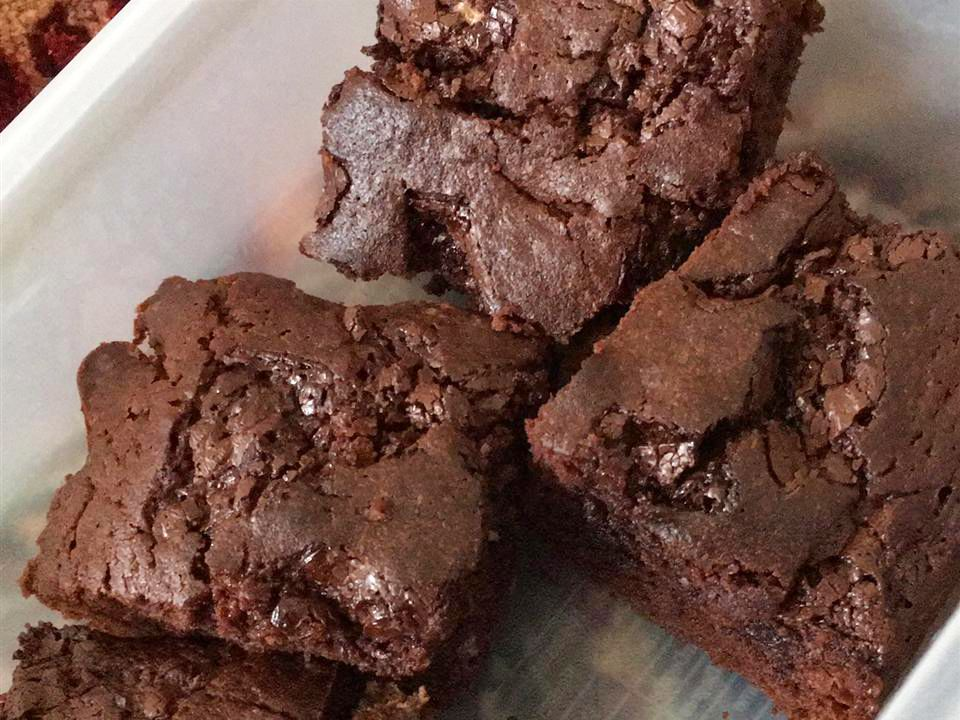

Brownies

Ingredients
- Baking Tray
- Greaseproof Paper
- 200g Dark Chocolate
- 175g Unsalted Butter
- 325g Caster Sugar
- 130g Plain Flour
- 3 Eggs
- Icing Sugur (Decoration)
Method
- Preheat the oven to 170°C
- Put the chocolate and butter in a heatproof bowl over a saucepan of simmering water (do not let the base of the bowl touch the water). Leave until melted and smooth
- Remove from the heat. Add the sugar and stir until well incorporated. Add the flour and stir until well incorporated. Finally, stir in the eggs and mix until thick and smooth.
- Spoon the mixture into the prepared baking tray, and bake in the preheated oven for about otherwise the edges will become hard and crunchy. Leave to cool completely before dusting with icing sugar, to decorate.